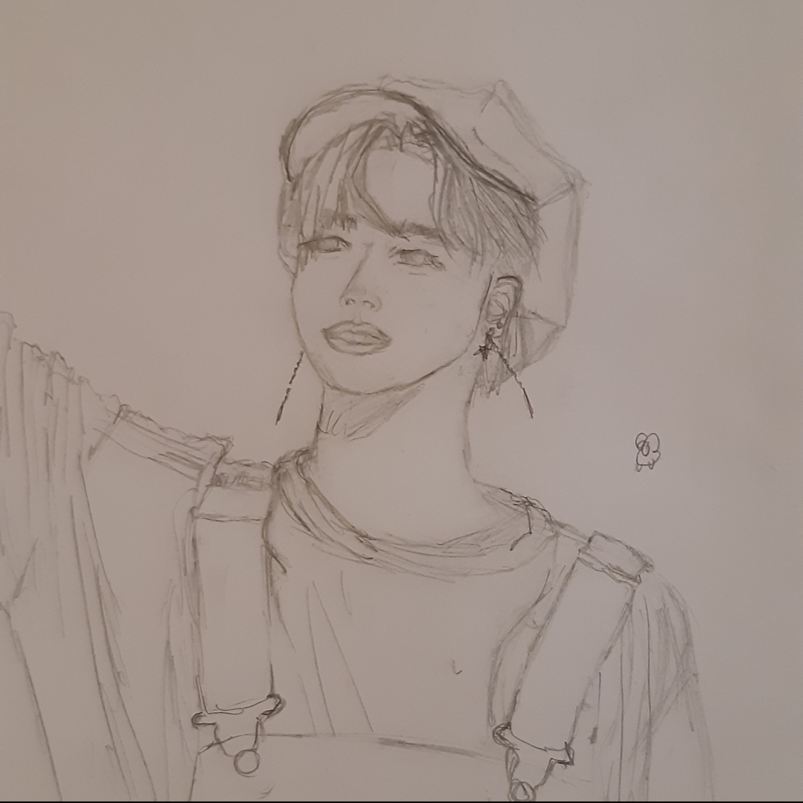

Sketching Practice #12
By Michelle
After my drawing I didnt really like yesterday I revisited some old portrait sketches i had and found one that was vaugely sketched out so I did some more detailing and I think I like how he turned out a bit more.
I was also able to use pencils and unfortunaly my erasor kept smuding but it ended up having an okay effect. I hate lips tho I really wish it was okay to just draw face masks in every picture.
